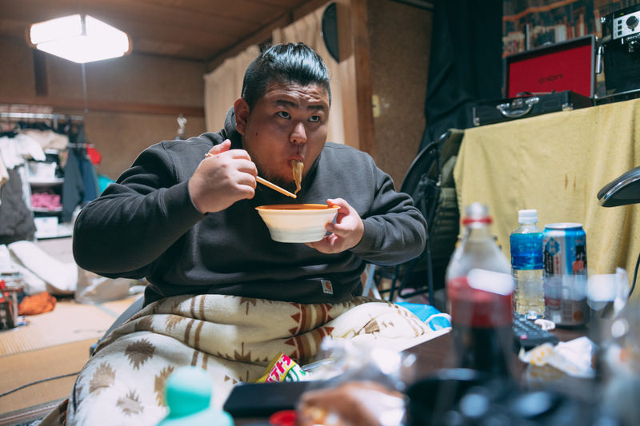

【衝撃】Niju Serverの「二択クイズ」で思わず吹いた回答集ｗｗｗ

どうも、Niju Server まとめ速報です！
今日も元気に二択クイズの話題をまとめていきますよ！
Niju Serverの中でも特に人気のある企画といえば、やっぱり「二択クイズ」ですよね！
参加者の個性が爆発するあの空間は、まさにカオスで腹筋崩壊ものです。
Q. 食べるなら「無限に続くラーメン」？ それとも「一瞬で消える高級ステーキ」？
この質問、あなたならどう答えますか？
普通なら「高級ステーキ」を選ぶ人が多いはず...しかし、Niju Serverの猛者たちは違った！
【悲報】Niju民の回答、狂っていた
1 ：名無しのNiju民：2025/12/08(月) 12:30:00 ID:NijuServer
「無限に続くラーメン」一択だろ！
食費が浮くし、なんならラーメン屋開けるわｗｗｗ
「無限に続くラーメン」一択だろ！
食費が浮くし、なんならラーメン屋開けるわｗｗｗ
2 ：匿名希望：2025/12/08(月) 12:32:15 ID:RaMeNLoVe
>>1
高級ステーキって言ってる奴は貧乏人乙
ラーメンの可能性を理解してない。スープで生活できる。
>>1
高級ステーキって言ってる奴は貧乏人乙
ラーメンの可能性を理解してない。スープで生活できる。
3 ：サーバー主 ：2025/12/08(月) 12:35:44 ID:ADMIN
ラーメンは途中で飽きる。
高級ステーキを選んで、その一瞬の感動を脳に焼き付ける！（至言）
ラーメンは途中で飽きる。
高級ステーキを選んで、その一瞬の感動を脳に焼き付ける！（至言）
4 ：名無しのNiju民：2025/12/08(月) 12:38:00 ID:MoBChaR
>>3
主、かっこつけてるけど金ないだけ説ｗｗｗ
>>3
主、かっこつけてるけど金ないだけ説ｗｗｗ
サーバー主まで参戦してて草！
やっぱ、ラーメンを選ぶ人が多いみたいですね。実利を取るのがNiju民らしいというか…。
Q. 「世界一臭い靴下」と「世界一美味しいケーキ」を交換できる？
これは究極の選択！交換することで生まれるメリット・デメリットを考えて、みんな真剣に悩んでいました。
156 ：スイーツ大好き：2025/12/08(月) 13:10:05 ID:CakeLover
交換する。ケーキは一瞬の喜びだが、
臭い靴下で人を遠ざけられるのは防御力アップ！
交換する。ケーキは一瞬の喜びだが、
臭い靴下で人を遠ざけられるのは防御力アップ！
157 ：名無しさん：2025/12/08(月) 13:11:20 ID:AbCdEfG
>>156
お前それぼっち確定じゃん…
>>156
お前それぼっち確定じゃん…
156のコメント、ポジティブすぎてワロタ。こういう発想が出てくるのが、このクイズの面白いところですよね！
あなたもNiju Serverでこのカオスを体験してみませんか？